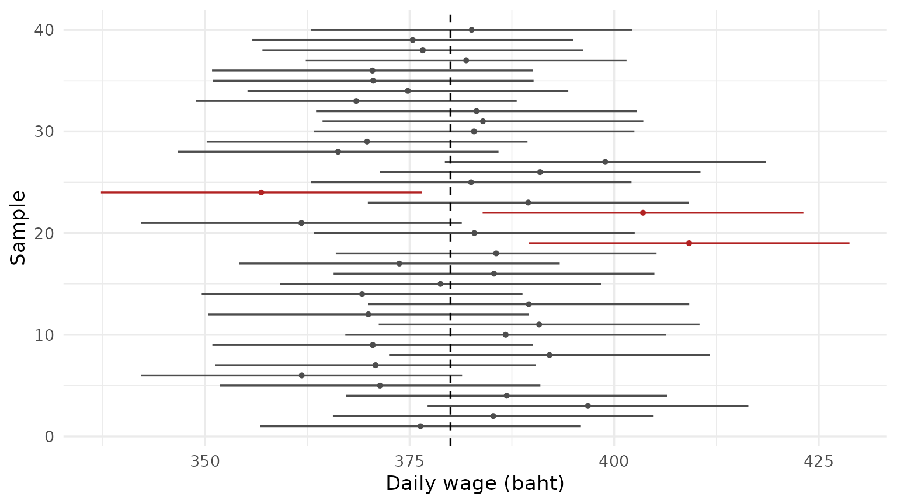
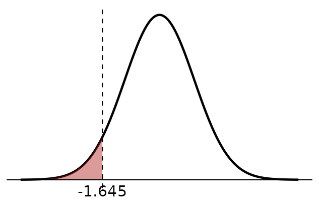

1 Basic Principles of Statistical Inference
Learning Objectives
After this chapter you should be able to:
- Distinguish a parameter from a statistic.
- Describe the sampling distribution of \(\bar{x}\) and of \(\hat{p}\): its mean, its standard error and its shape.
- Calculate the standard error of \(\bar{x}\) and of \(\hat{p}\).
- Explain what a 95% confidence interval means.
- Write the null and alternative hypotheses for a research question, and tell a one-sided test from a two-sided test.
- Find critical values and the critical region from the \(z\) table (Table 4).
- Explain Type I and Type II errors in an economic setting.
1.1 Parameters, Statistics and Sampling Distributions
A parameter describes a population. It is a fixed number, but usually unknown. A statistic describes a sample. We can calculate it, but it changes from sample to sample.
| Population (parameter) | Sample (statistic) | |
|---|---|---|
| Mean | \(\mu\) | \(\bar{x}\) |
| Standard deviation | \(\sigma\) | \(s\) |
| Variance | \(\sigma^2\) | \(s^2\) |
| Proportion | \(p\) | \(\hat{p}\) |
| Size | \(N\) | \(n\) |
The sampling distribution of a statistic is the distribution of its values over all possible samples of the same size \(n\).
Example. Figure 1.1 uses a population of 100,000 households. Monthly household income is skewed to the right: most households earn a moderate amount and a few earn a great deal. The population mean is \(\mu\) = 27,054 baht and the standard deviation is \(\sigma\) = 19,543 baht. The other panels show the means of 5,000 random samples of size 5, 30 and 100.
Three things happen as \(n\) grows:
- The sample means are centred on the population mean \(\mu\) (dashed line).
- The spread of the sample means gets smaller.
- The shape gets closer to a normal curve, even though the population is skewed.
1.2 Standard Error and the Central Limit Theorem
The standard deviation of a sampling distribution is called the standard error (SE). It measures how much a statistic varies from sample to sample.
Sampling distribution of \(\bar{x}\)
- Mean: \(\mu_{\bar{x}} = \mu\)
- Standard error: \(\displaystyle \sigma_{\bar{x}} = \frac{\sigma}{\sqrt{n}}\)
- Shape:
- if the population is normal, \(\bar{x}\) is normal for any \(n\);
- if not, \(\bar{x}\) is approximately normal when \(n\) is large (\(n \ge 30\)). This is the Central Limit Theorem (CLT).
Sampling distribution of \(\hat{p}\)
The sample proportion \(\hat{p} = x/n\), where \(x\) is the number of “successes”.
- Mean: \(\mu_{\hat{p}} = p\)
- Standard error: \(\displaystyle \sigma_{\hat{p}} = \sqrt{\frac{p(1-p)}{n}}\)
- Shape: approximately normal when \(np \ge 5\) and \(n(1-p) \ge 5\).
Example 1.1: daily wage
The daily wage of construction workers in Chiang Mai has mean \(\mu\) = 380 baht and standard deviation \(\sigma\) = 60 baht.
- Describe the sampling distribution of \(\bar{x}\) for samples of \(n\) = 36 workers.
- Find the standard error for samples of \(n\) = 144 workers.
Example 1.2: household debt
In a region, 65% of households have outstanding debt. A survey samples \(n\) = 400 households. Describe the sampling distribution of \(\hat{p}\).
Your Turn
TipSolution: Your Turn 1.1
\(\sigma_{\bar{x}} = 900 / \sqrt{81} = 100\) baht.
\(\sigma_{\bar{x}} = 900 / \sqrt{324} = 50\) baht.
TipSolution: Your Turn 1.2
\(np = 240\) and \(n(1-p) = 360\) are both at least 5, so \(\hat{p}\) is approximately normal. \(\sigma_{\hat{p}} = \sqrt{0.40(0.60)/600} = 0.02\).
1.3 The Idea of a Confidence Interval
A single number such as \(\bar{x}\) is a point estimate. It is almost never exactly equal to \(\mu\). A confidence interval (CI) gives a range of plausible values instead: \[ \text{point estimate} \;\pm\; (\text{critical value}) \times \text{SE} \]
The confidence level (for example 95%) describes the method, not one interval: if we took many samples and built a 95% CI from each, about 95% of the intervals would contain the true parameter.

In Figure 1.2, 37 of the 40 intervals contain \(\mu\) = 380 and 3 do not. For a single interval we write:
We are 95% confident that the mean daily wage is between … and … baht.
Chapters 2 and 3 give the formula of the CI for each parameter.
1.4 The Logic of Hypothesis Testing
A hypothesis test uses sample data to decide between two statements about a population parameter.
- The null hypothesis \(H_0\) is the statement of “no change” or “no difference”. It always contains the equals sign.
- The alternative hypothesis \(H_1\) is what the researcher wants to show. It contains \(\ne\), \(<\) or \(>\).
We assume \(H_0\) is true and ask whether the sample result is unusual under that assumption. If it is, we reject \(H_0\).
Example. The Ministry of Labour reports that the mean daily wage of construction workers is 380 baht. A labour union believes the mean is lower. \[ H_0: \mu = 380 \qquad H_1: \mu < 380 \]
The direction in \(H_1\) comes from the research question, never from the data.
| Research question | \(H_1\) | Test | Critical region |
|---|---|---|---|
| Is it different from \(\mu_0\)? | \(\mu \ne \mu_0\) | two-sided | both tails, area \(\alpha/2\) each |
| Is it less than \(\mu_0\)? | \(\mu < \mu_0\) | one-sided (left) | left tail, area \(\alpha\) |
| Is it greater than \(\mu_0\)? | \(\mu > \mu_0\) | one-sided (right) | right tail, area \(\alpha\) |
Test statistic, critical value and critical region
- The test statistic measures how far the sample result is from \(H_0\), in standard errors. For example \(z_{\text{cal}} = (\bar{x} - \mu_0)/(\sigma/\sqrt{n})\).
- The level of significance \(\alpha\) is the probability of rejecting \(H_0\) when \(H_0\) is true. We usually use \(\alpha\) = 0.05.
- The critical value separates the values of the test statistic that lead to rejecting \(H_0\) from those that do not.
- The critical region is the set of values that lead to rejecting \(H_0\).



Decision rule. If \(z_{\text{cal}}\) falls in the critical region, we reject \(H_0\). Otherwise we accept \(H_0\).
Writing the hypotheses
Example 1.3. Write \(H_0\) and \(H_1\).
- A price-monitoring agency checks whether the mean price of a 5-kg bag of rice has changed from 210 baht.
- An economist claims that more than 30% of households in Chiang Mai have used a government stimulus measure.
- A bank claims that the mean monthly loan payment of its customers is less than 8,000 baht.
TipSolution: Your Turn 1.3
- \(H_0: \mu = 200000 \quad H_1: \mu > 200000\) (right-sided)
- \(H_0: p = 0.50 \quad H_1: p \ne 0.50\) (two-sided)
- \(H_0: \mu = 14 \quad H_1: \mu < 14\) (left-sided)
1.5 Type I and Type II Errors
The decision is based on a sample, so it can be wrong.
| \(H_0\) is true | \(H_0\) is false | |
|---|---|---|
| Reject \(H_0\) | Type I error (probability \(\alpha\)) | Correct decision |
| Accept \(H_0\) | Correct decision | Type II error (probability \(\beta\)) |
Example. The government tests whether a stimulus measure increased mean household spending. \(H_0\): the measure had no effect; \(H_1\): the measure increased spending.
- Type I error: concluding that the measure worked when it did not. The government may continue an expensive policy that has no effect.
- Type II error: concluding that the measure did not work when it did. The government may stop a useful policy.
1.6 Reading Statistical Tables
All the tables used in this course (Tables 4–7) give the area to the left of a value. The subscript in our notation is that area: \(z_{0.975}\) is the value with area 0.975 to its left.
The \(z\) table (Table 4) gives \(P(Z \le z)\) for \(z\) from 0.00 to 3.49. The bottom row also lists the most common values:
| Area to the left | z |
|---|---|
| 0.900 | 1.282 |
| 0.950 | 1.645 |
| 0.975 | 1.960 |
| 0.990 | 2.326 |
| 0.995 | 2.576 |
Table 4 has only positive \(z\). Because the normal curve is symmetric, \(z_{0.05} = -z_{0.95}\) and \(z_{0.025} = -z_{0.975}\).
Example 1.4. Find the critical value(s) and critical region for a \(z\) test with \(\alpha\) = 0.05.


TipSolution: Your Turn 1.4
Areas 0.005 and 0.995: \(z_{0.995} = 2.576\). Critical region: \(z_{\text{cal}} < -2.576\) or \(z_{\text{cal}} > 2.576\).
Area 0.99: \(z_{0.99} = 2.326\). Critical region: \(z_{\text{cal}} > 2.326\).
Area 0.10: \(z_{0.10} = -z_{0.90} = -1.282\). Critical region: \(z_{\text{cal}} < -1.282\).
Formula Summary
| Statistic | Mean | Standard error | Normal when |
|---|---|---|---|
| \(\bar{x}\) | \(\mu\) | \(\dfrac{\sigma}{\sqrt{n}}\) | population normal, or \(n \ge 30\) |
| \(\hat{p}\) | \(p\) | \(\sqrt{\dfrac{p(1-p)}{n}}\) | \(np \ge 5\) and \(n(1-p) \ge 5\) |
| \(H_1\) | Critical region (\(z\) test) |
|---|---|
| \(\ne\) | \(z_{\text{cal}} < z_{\alpha/2}\) or \(z_{\text{cal}} > z_{1-\alpha/2}\) |
| \(<\) | \(z_{\text{cal}} < z_{\alpha}\) |
| \(>\) | \(z_{\text{cal}} > z_{1-\alpha}\) |
Exercises
1.1 The price of a kilogram of pork at fresh markets has mean 45 baht and standard deviation 4 baht. A random sample of 64 markets is taken.
- Describe the sampling distribution of \(\bar{x}\).
- How many markets are needed for the standard error to be 0.25 baht?
TipSolution: Exercise 1.1
Since \(n\) = 64 \(\ge 30\), \(\bar{x}\) is approximately normal with mean 45 baht and \(\sigma_{\bar{x}} = 4/\sqrt{64} = 0.5\) baht.
\(4/\sqrt{n} = 0.25\) gives \(\sqrt{n} = 16\), so \(n\) = 256 markets.
1.2 Write \(H_0\) and \(H_1\).
- The Bank of Thailand tests whether mean headline inflation over the past year was above its 3% upper target.
- A researcher tests whether the proportion of graduates who find a job within six months differs from 0.70.
- A firm tests whether a discount campaign reduced the mean time to sell a product below 20 days.
TipSolution: Exercise 1.2
- \(H_0: \mu = 3 \quad H_1: \mu > 3\)
- \(H_0: p = 0.70 \quad H_1: p \ne 0.70\)
- \(H_0: \mu = 20 \quad H_1: \mu < 20\)
1.3 Find the critical value(s) and the critical region of a \(z\) test.
- \(H_1: \mu \ne \mu_0\), \(\alpha\) = 0.10
- \(H_1: \mu < \mu_0\), \(\alpha\) = 0.01
- \(H_1: p > p_0\), \(\alpha\) = 0.05
TipSolution: Exercise 1.3
- \(z_{0.95} = 1.645\): reject \(H_0\) if \(z_{\text{cal}} < -1.645\) or \(z_{\text{cal}} > 1.645\).
- \(z_{0.01} = -z_{0.99} = -2.326\): reject \(H_0\) if \(z_{\text{cal}} < -2.326\).
- \(z_{0.95} = 1.645\): reject \(H_0\) if \(z_{\text{cal}} > 1.645\).
1.4 A provincial office tests whether a job-training programme raised the mean monthly income of participants. \(H_0\): the programme has no effect on mean income; \(H_1\): the programme raises mean income. Describe a Type I error and a Type II error in this context, and give one consequence of each.
TipSolution: Exercise 1.4
Type I error: concluding that the programme raises income when it does not. Budget may continue to be spent on a programme that does not work. Type II error: concluding that the programme has no effect when it does raise income. A useful programme may be cut.
1.5 The unemployment rate in a province is 5%. Can the normal approximation be used for \(\hat{p}\) when (a) \(n\) = 80, (b) \(n\) = 200? Explain.
TipSolution: Exercise 1.5
- \(np = 80(0.05) = 4 < 5\), so the normal approximation should not be used.
- \(np = 200(0.05) = 10\) and \(n(1-p) = 190\) are both at least 5, so it can be used.
1.6 A 95% CI for the mean monthly electricity bill of households in a city is 1,120 to 1,280 baht. Which statements are correct?
- We are 95% confident that the mean monthly electricity bill of all households in the city is between 1,120 and 1,280 baht.
- 95% of households in the city pay between 1,120 and 1,280 baht per month.
- If we took many samples and built a 95% CI from each, about 95% of the intervals would contain the population mean.
TipSolution: Exercise 1.6
- and (c) are correct. (b) is wrong: the interval is about the population mean, not about individual households.